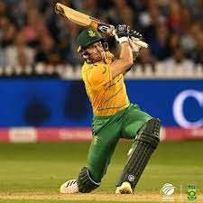

South Africa T20I Team
Powerful team with strong bowling and batting.
About South Africa T20I Team
Country: South Africa
Home Ground: Various (e.g., Newlands, Cape Town)
Captain: Aiden Markram
Coach: Rob Walter
South Africa’s T20I team, the Proteas, is known for its pace bowling and explosive batting. They are consistent performers in T20 World Cups.
South-African Players
Aiden Markram (C)
Captain, batsman.
Reeza Hendricks
Opener, consistent scorer.
Heinrich Klaasen
Wicketkeeper-batsman, power-hitter.
David Miller
Batsman, finisher.

Tristan Stubbs
Batsman, rising star.
Marco Jansen
All-rounder, pace bowler.
Quinton de Kock
Wicketkeeper-batsman, aggressive.
Kagiso Rabada
Bowler, pace spearhead.
Anrich Nortje
Bowler, express pace.
Tabrez Shamsi
Spinner, wicket-taker.
Keshav Maharaj
Spinner, economical.